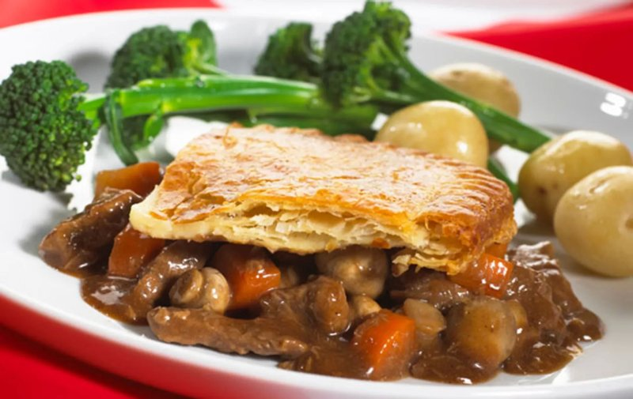

Steak and Ale Pie

Description
In the mood for a good old English classic? Then this recipe has you covered. Here's everything you need to prepare and cook an amazing Steak and Ale Pie.
Ingredients
For the filling
- 1 tbsp vegetable oil
- 100g smoked bacon lardons or smoked bacon, chopped
- 1kg beef shin, cut into large chunks
- 2 onions, roughly chopped
- 3 carrots, peeled and cut into large chunks
- 3 tbsp plain flour
- 1 tbsp tomato purée
- 1 tbsp malt or red wine vinegar
- 1 tbsp brown miso paste (optional)
- 400ml sweet brown ale
- 600ml beef stock made from 2 stock cubes
- Few time sprigs, stalks and leaves separated
- 2 bay leaves
For the pastry
- 700g plain flour, plus extra for dusting
- 2 tbsp English mustard powder
- 150g lard
- 150g butter
- 2 egg yolks, beaten
How to make
- Heat the oven to 160C / 140C fan assisted / fas 3/
- Heat the vegetable oil in a large casserole dish
- Gently fry the bacon for 5 minutes until lightly browned, then remove and set aside
- In the same pan, brown the beef well in batches for 5-8 mins, adding more oil if needed, then remove and set aside
- Add the onions and carrots to the pan and cook on a low heat for 5 minutes
- Stir in the flour, then add the tomato purée, vinegar, and miso (if using)
- Tip the beef and bacon, along with any juices, back into the pan and give a good stir
- Add the stock and ale, and nestle in the thyme stalks and bay leaves
- Season generously and bring to a simmer
- Cook for about 2 hours, or until the meat is nice and tender
- Leave everything to cool slightly, then strain off about half the braising liquid into a separate container
- Leave to cool completely